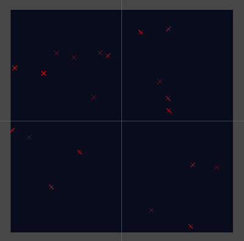
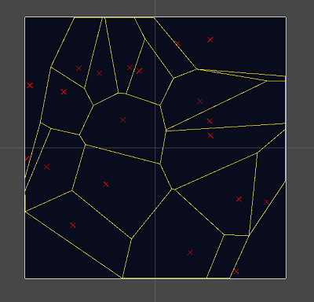
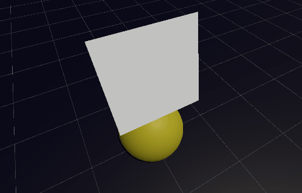

Until You Wake is a 3D 3rd-person action shooter game where the player plays a sentinel guarding their temple from enemies. The goddess has awoken the sentinel to take back the stolen sword from the demons. Using their bow and a bit of magic, the player will fight through hordes of crawlers and wisps, and finally defeat the leader of the demons!
This game was developed by 15 people in total. There were 6 artists, 4 programmers, 4 designers, and 1 audio designer.
Until You Wake was developed using Unity. This was my first time working with a team using a commercial game engine.
Since the team was using Unity, I wanted to challenge myself and work on a complex system. And, considering my interest in graphics and physics programming, the team came up with the idea to add a system to dynamically break models in the world. The goal was to have the ability to break or shatter any mesh when shot or thrown. This would allow for interesting gameplay scenarios such as breaking enemy cover, breaking through walls, or just having fun throwing breakable objects.
The first step was to do research on how this could be implemented. Most of my findings indicated objects can be broken by deleteing the object and spawning fake debris in its place. We decided not to do this because it would put more load on the artists, and I wanted to try a suggestion an artist gave. Dylan King suggested I look into Voronoi shattering to break each object. It seemed to be exactly what we wanted, so I gathered references and articles:
The research suggested to use the Voronoi diagram to generate chunks of the object. In 2D, you can overlay the diagram on an object and break it along the edges. The Voronoi cells become the object's shards. So, the steps to break an object in 2D are as follows:
Generating the sites is how you control the object's shattering. The sites generated will be the "center" of the object's shards. You can generate the sites randomly, uniformly, using a normal distribution, raycasting, or however you'd like. Each method gives a different effect.
Computing the Voronoi Diagram given the sites is the most difficult part. There are multiple ways of achieving this including: using a discretized method, Fortune's Algorithm, or using the Delaunay Triangulation. Using a discretized method would be difficult because we weren't working with voxels. Fortune's Algorithm would also be difficult because it involves computing intersections of parabolas. I didn't find any research done on this in 3D. So, I ended up choosing the Delaunay Triangulation as previous research has done. Extracting the Voronoi Diagram from the Delaunay Triangulation is as follows:
And that's all there is to computing a Voronoi Diagram extracted from a Delaunay Triangulation generated using the Bowyer-Watson Algorithm! Simple, right? Ya, I didn't know what I was getting myself into...
Continuing on with the algorithm, we still need to clip the Voronoi Diagram to the boundaries of the mesh. This clipping is very similar to how clipping is done when rendering (see my Software Renderer project). This could even work with concave objects by just walking the boundary of the object when clipping a Voronoi cell. Though, we never got to that point.
Generating the object's chunks is a trivial part of the algorithm. Since each Voronoi Cell is by definition convex, you can generate a mesh for each chunk using a triangle-fan method.
Now that we have all the chunks, it's time to create game objects out of them and simulate them!
This process was chosen because the Delaunay Triangulation and Voronoi Diagram work on N-dimensional points. So, in theory, it should easily extend to 3D. Of course, it's a bit more complicated than that in practice. Unfortunately, the Bowyer-Watson algorithm has issues with floating point precision as outlined here that didn't show up in 2D. Not only this, but clipping becomes more difficult with arbitrary meshes. Unfortunately, since it was taking so much time, this system never made it into the game. I decided to halt development of this system and contribute to other areas of the game.
In Until You Wake, the character is able to use magic to throw objects using "the force." This adds multiple dimensions in gameplay such as using objects to damage enemies, pulling over bookcases, unlocking far-away doors with keys, etc. The player would interact with each object the same, but how objects react would be different. In order to make this easy to program for, I created an interface for objects to be "auto-targeted." Each force-able object would implement this interface and automatically gain the ability to be targeted. For example - when targeted: a small object would be launched, a bookcase would fall over, and a key would lerp toward a lock. But, they would all be targeted and activated the same.
When the player wants to target a force object, they would look towards the object and press F. The targeting only selected objects within some range and dot product threshold. The final object targeted would be the one with the highest dot product. This made targeting any force object easy, efficient, and intuitive for the player.
Since Until You Wake was a 3rd person game, much more work had to be put into the camera to make it "feel good." A lot of games will put the camera's pivot just above the player's head. But, we wanted our character to take up the left 1/3 of the screen. This meant the camera had to be offset. My first attempt was to orbit on a sphere. However, aiming up and down became difficult because of the sphere's shape and a gimbal lock effect. I had to do a few passes before I realized the camera should orbit on a cylinder. Looking horizontally would rotate the cylinder about the player. Looking vertically would move the camera along the cylinder's curved surface. The camera can move closer or further from the player by moving along the cylinder's axis.
Another issue to solve is the camera clipping into level geometry. A sphere-swept shape had to be checked when positioning the camera so it will move closer to the player when colliding with a wall. This can be quite jarring, though. A solution to this would be to detect the camera is close to a wall and begin lerping toward the player before colliding with the wall.
The final boss was the most complex AI in the game. As a first pass, I decided to implement a state-machine AI system. This made it easier to program different states and transitions for each boss behavior. Also, it made working with Unity's animation system easier and more explicit.